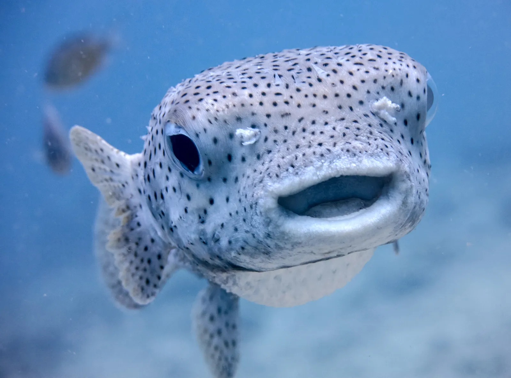
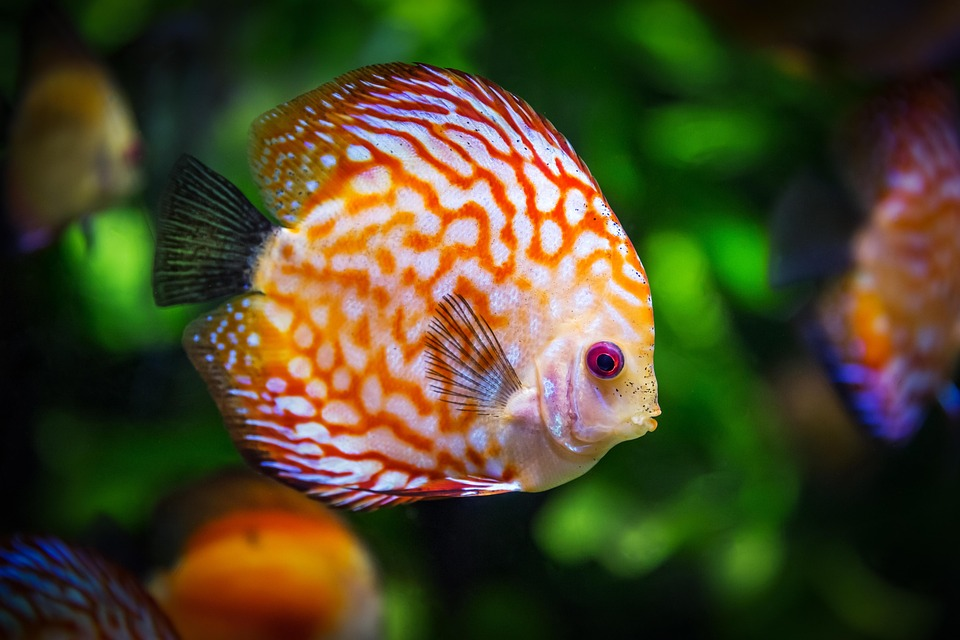
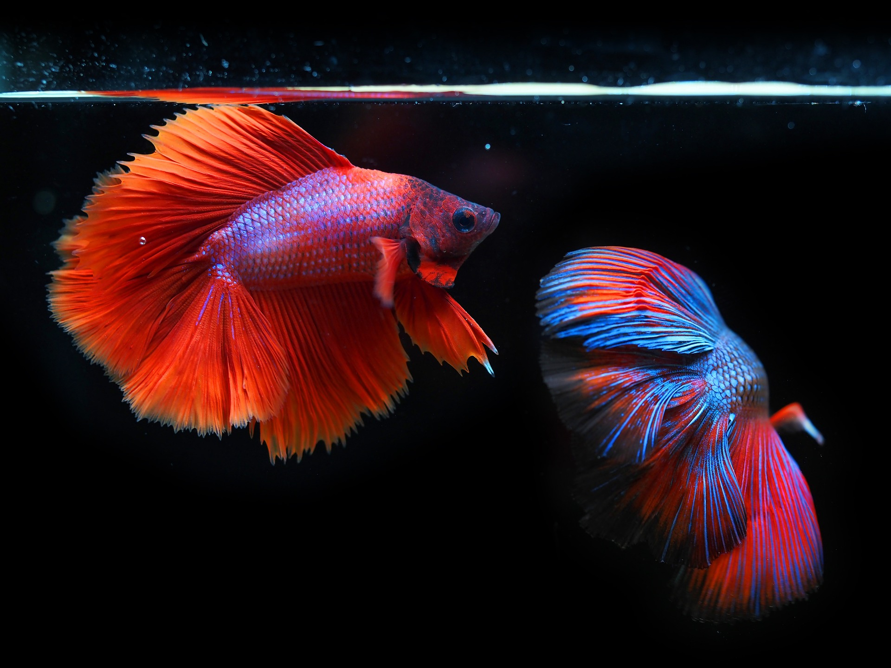
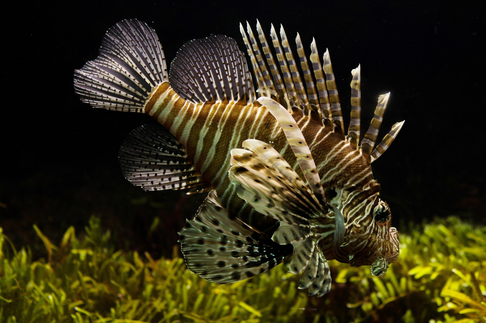

Fishes are aquatic animals that come in a wide variety of shapes, sizes, and colors. They are found in almost every aquatic environment, from freshwater rivers and lakes to the vast oceans. Fishes play a crucial role in the ecosystem, serving as both predators and prey. They are also important for human consumption



